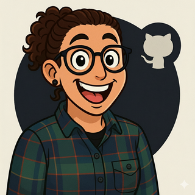

Maggie Conboy
Senior PM | AI Builder | Operating-System Architect for Product TeamsSenior PM who ships AI, in the weeds and at scale.
9 years building digital platforms for 100M+ customers a year. At GitHub, Texas Roadhouse, Five Guys, Carl's Jr., Hardee's, Dutch Bros, Dash In, Pilot Flying J, and more national brands. $6.3M in AI-driven revenue at GitHub in 8 months. A Texas Roadhouse turnaround that ran on zero missed deadlines for 2+ years. And a side project shelf I keep filling, because the best way to know what AI can ship is to ship it.
Senior PM with 9 years building digital platforms for people who don't think they're using technology
I'm a senior PM with 9 years of building digital platforms for people who don't think they're using technology, they're just trying to order dinner. I shipped 15+ apps and websites for national restaurant and convenience-store brands at Hathway and Bounteous, including the Texas Roadhouse turnaround that ran on zero missed deadlines for 2+ years and processed around $494M in annual digital revenue by 2024. Now I'm at GitHub building AI products that ship into Salesforce, including the first AI/ML sales intelligence tool that generated $6.3M ARR in 8 months.
When I'm off the clock I build my own AI products with Copilot. Rack Sabbath. Assertive Spark. The site you're reading right now. I'm a PM who closed the gap between knowing what good software looks like and being able to ship it myself.
I live in Buffalo with my partner and our daughter Mary. I'm not moving.
How I work
I work in the weeds. The best product decisions happen when the PM is in the issue tracker, in the design file, on the engineering call, in the client meeting, all in the same week. I don't manage from above. I solve the problem alongside the people building it.
I build operating systems, not just features. Fixed release cadence over deadline negotiation. Story points over guesses. Trust over escalations. The work I'm proudest of is the playbook other PMs reuse after I leave.
I don't accept things the way they are. Ever.
My Approach
Data-Driven Decision Making
Using analytics and user research to validate assumptions and measure impact
Cross Functional Leadership
Aligning engineering, design, marketing, and business stakeholders around shared goals
Customer Obsession
Building products that solve real problems, not just ship features
Technical Fluency
Understanding system architecture to make informed product tradeoffs
Career Journey
From PM I to Senior PM, Building products that matter


Product Leader Driving Transformative Growth
I build the systems that allow organizations to operate at full velocity. Whether it's eliminating escalations, establishing release discipline, or designing capacity frameworks that scale across teams, my work creates an environment where good people do their best work without requiring leadership intervention.